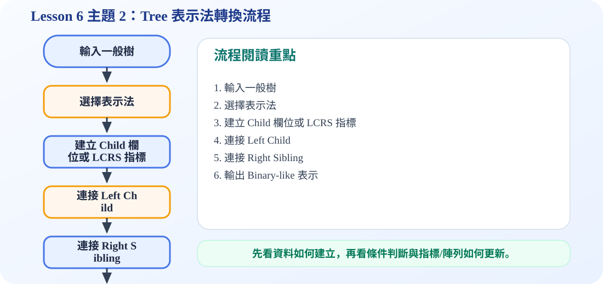

一、為什麼樹需要表示法？
核心問題
在投影片中，我們看見的 tree 是圖形：A 在上面，B、C 在下面，D、E、K、F、M 等節點再往下展開。可是電腦記憶體不是用圖形儲存資料，而是用一格一格的資料欄位與位址。因此我們需要一種 representation，把圖形上的「上下層關係」轉成可以儲存與走訪的結構。
最重要的想法是：每個節點除了儲存自己的 data，還要記錄它和其他節點的連結。連結可以指向 child，也可以指向 sibling。
二、Left Child-Right Sibling 表示法
Left Child-Right Sibling 可以翻成「左孩子－右兄弟表示法」。每個節點保留兩個指標：
- left child：指向這個節點最左邊、第一個孩子。
- right sibling：指向這個節點右邊最接近的兄弟節點。
這種方法很適合一般樹，因為一般樹每個節點的孩子數量不固定。如果每個節點都預留很多 child 指標，會浪費空間；改成只保留 left child 和 right sibling，就能用固定欄位表示不同分支數量的樹。
三、動畫流程圖：一般樹如何轉成 Left Child-Right Sibling？
四、Left Child-Right Child 表示法
投影片 9 進一步示範另一種表示方式：Left Child-Right Child。這個形式看起來更接近 binary tree 的節點結構，每個節點有：
- data：節點資料。
- left child：左孩子。
- right child：右孩子。
當一般樹透過 left child-right sibling 轉換後，可以再把「right sibling」想成二元樹中的「right child」。也就是說，一般樹可以被轉成一種二元樹形式，方便後續使用 binary tree 的方法來處理。
原本的一般樹
一個 parent 可以有很多 children，因此每個節點的分支數量不固定。
轉換後的二元形式
每個節點只保留 left child 與 right child，資料結構變得規律，也比較容易實作。
五、簡單例子
假設 A 有三個孩子 B、C、D。在一般圖形上，A 會直接連到 B、C、D。
使用 Left Child-Right Sibling 時，A 的 left child 指向 B；B 的 right sibling 指向 C；C 的 right sibling 指向 D。這樣 A 不需要同時存三個 child 指標，只要從 B 開始沿著 sibling 找，就能找到 A 的所有孩子。
記憶方式：Parent 只牽第一個孩子；同一層兄弟自己手牽手排成一列。
可編輯 C 程式範例：含中文註解與線上編輯器
這一段提供可直接修改的 C 程式碼。可以按「複製程式」貼到線上編輯器執行，也可以下載 .c 檔案。
程式題目教學內容：Tree Representation：Left-Child Right-Sibling
一、程式題目講解
本題說明一般樹如何用 left child 與 right sibling 兩個指標表示。學生需要理解：第一個孩子用 leftChild 連接，其餘兄弟節點用 rightSibling 串接。
二、完整程式碼
完整可執行程式碼已保留在上方「可編輯 C 程式範例：含中文註解與線上編輯器」區塊中，檔名為 lesson6_topic2_demo.c。該程式碼已加入中文註解，學生可以直接複製到 OnlineGDB、Programiz 或 OneCompiler 執行。
三、程式執行結果
A 的 left child 是 B
B 的 right sibling 是 C輸出顯示 A 的 left child 是 B，B 的 right sibling 是 C，代表 A 的第一個孩子為 B，而 C 是 B 的同層兄弟，因此 A 實際上有 B、C 兩個孩子。
四、程式流程圖與流程圖說明
本頁下方已保留原本的程式流程圖。閱讀流程圖時，可以依序掌握「初始化資料或節點 → 執行主要函式或判斷 → 輸出結果」的過程。先建立 A、B、C 節點，再設定 A->leftChild = B，接著設定 B->rightSibling = C，最後印出這兩個連結關係。
五、重要函數與語法說明
createNode()：建立並初始化節點；malloc()：配置節點記憶體；->：透過指標存取結構成員；printf()：輸出節點關係。
六、整體說明
本題讓學生理解一般樹轉成二元形式的基礎：向下看第一個孩子，向右看下一個兄弟。
程式流程圖：Tree 表示法轉換流程
下圖是本主題對應的程式執行流程，適合搭配本頁 C 程式碼一起看。

流程講解
- 程式先讀入一般樹的父子關係，再決定要用 k-ary node 或 left-child right-sibling 表示。
- 若使用 LCRS，第一個孩子放在 left child，其他兄弟用 right sibling 串起來。
- 這種表示法可以把一般樹轉成類似 binary tree 的結構。
- 最後輸出每個節點的 left child 與 right sibling，確認轉換是否正確。
這張流程圖把本頁程式的執行順序整理成一條清楚路徑。閱讀時先看輸入與資料如何建立，再看條件判斷、指標或陣列索引如何改變，最後用輸出結果確認程式邏輯是否正確。